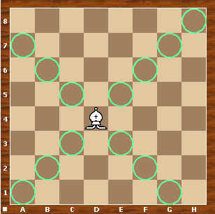
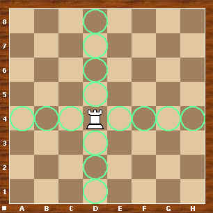
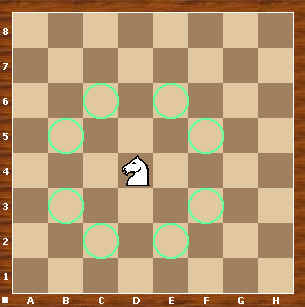
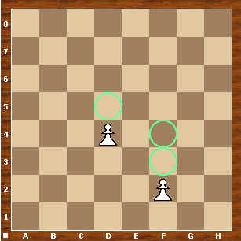
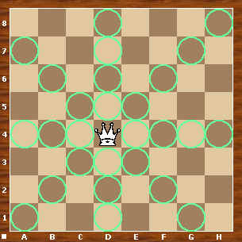

Der Läufer bewegt sich diagonal und kann auf einem leeren Brett mit nur einem Zug
mehrere Felder entlang einer Diagonalen weiterbewegt werden. Eine Diagonale ist eine
schräge Anordnung vom gleichfarbigen Feldern, die von einem zum anderen Brettrand reicht.

Turm
Der Turm bewegt sich geradlinig (senkrecht oder waagrecht) entlang von Reihen und Linien.
Der Turm ist mächtiger als ein Läufer, weil er alle Felder eines Schachbrettes erreichen kann,
während der Läufer auf den schwarzen oder weißen Feldern gebunden ist und somit nur die
Hälfte aller Felder erreichen kann.

Springer
Der Springer besitzt eine eigenartige Gangart, den sogenannten Rösselsprung. Als Merkregel für
den Rösselsprung kann man "Eins gerade, eins schräg" oder "Zwei geradeaus, eins zur Seite" benutzen.
Der Springer kann als einzige Figur über andere hinwegspringen.

Bauer
Der Bauer zieht immer nur ein Feld vorwärts. Vorwärts heißt in der Grundstellung in Richtung
der gegnerischen Figuren. Falls der Bauer noch nicht gezogen hat, darf er zwei Felder auf einmal ziehen,
d.h. einen Doppelschritt ausführen. Der Bauer kann nur Figuren schlagen, die sich ein Feld diagonal vor
ihm befinden. Der Bauer ist somit die einzige Figur, die auf unterschiedliche Arten schlägt und zieht.

Dame
Die Dame ist die stärkste Figur im Spiel. Sie vereinigt die Gangarten von Turm und Läufer
und kann sowohl geradeaus oder diagonal ziehen.

König
König
Der König kann wie die Dame in jede Richtung ziehen, allerdings nur ein Feld weit.
Einzige Ausnahme ist die Rochade.